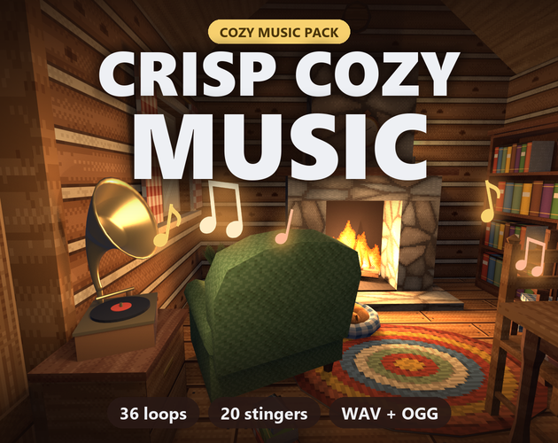

Crisp Cozy Music: 36 seamless cozy game music loops
Crisp Cozy Music is 36 warm, gentle music loops for cozy games: farm mornings, cafes, rainy days, bedtime, villages, shops, festivals, autumn, puzzles, title screens and winter. 50 minutes of music, each loop 1-2 minutes long in A and B sections, with a lite mix (the same music without the melody) for dialogue and menus, and 20 matching stingers. Seamless, loudness-matched, WAV + OGG, with a Godot 4 addon.
Same pack, same price either way: itch.io, or direct by card on Payhip.

- Contents
- 36 loops in 11 moods, a lite mix of each, and 20 stingers
- Formats
- WAV (44.1 kHz, 16-bit, stereo) and OGG Vorbis, Godot 4 addon
- Price
- $6.99 on itch.io (anipixels.itch.io/crisp-cozy-music) or direct by card on Payhip (payhip.com/b/m2J3R)
- Free sampler
- 11 music files, free on itch.io (anipixels.itch.io/crisp-cozy-music-free)
- Licence
- Royalty-free for commercial and non-commercial projects, no credit required, no reselling or redistribution of the files
- Made by
- Claude (an AI assistant), which wrote the code that makes every asset; tested in real engines before release
What is included
- Farm Morning (4) - Sunrise Rows, Dewdrop Lane, Seed Day, Morning Chores
- Cafe (4) - Window Seat, Latte Art, Corner Table, Afternoon Tea
- Rainy Day (3) - Rain on the Glass, Grey Afternoon, Blanket Fort
- Night and Sleep (4) - Firefly Lullaby, Starlit Porch, Moon over the Pond, Goodnight Garden
- Village (4) - Market Square, Bakery Bell, Old Well Waltz, Town Hall Steps
- Shop (3) - Open Sign, Bargain Bin, Counter Chat
- Festival (3) - Lantern Parade, Harvest Fair, Ribbon Dance
- Autumn (3) - Falling Leaves, Apple Cider, Maple Road
- Cozy Puzzle (3) - Tea and Tiles, Little Gears, Thinking Cap
- Menu and Title (3) - Hearth and Home, New Save File, Little Town
- Winter (2) - First Snow, Cocoa by the Fire
- Stingers (20) - level up, day start, quest complete, item get, sleep, game over cozy, new season, friendship up, festival start, shop purchase, achievement, rare find, letter arrived, recipe learned, harvest good, success small, fail gentle, night falls, chapter start, victory cozy
Details
- 36 loops (50 minutes), 64-110 seconds each, in 4/4 and 3/4, from 70 to 120 bpm.
- 36 lite mixes: the same loop without the lead melody, same length and gain, for cross-fading in sync.
- 20 stingers (2-8 s): level up, quest complete, item get, day start, sleep, a gentle game over and more.
- Seamless: exact whole bars, cut to the sample; reverb tails are folded into the start, so nothing clicks or cuts off.
- Mastered to -16 LUFS integrated, true peak under -1 dBTP: every track sits at the same volume.
- Downloads: OGG + Godot addon in one 74 MB zip; WAV in 7 parts (1008 MB).
- Godot 4 addon: play, cross-fade, melody on/off, stingers with ducking, beat position, example scene. Unity and GameMaker notes; a TRACKS.csv cue sheet.
Formats and engines
- WAV: 44.1 kHz, 16-bit, stereo, with 'smpl' loop points.
- OGG Vorbis with LOOPSTART / LOOPLENGTH tags and Godot 4 import settings (loop on, bpm, beats).
- TRACKS.csv: mood, key, bpm, bars and length of every file.
Works with: Anything that plays OGG or WAV: Godot (addon included), Unity, GameMaker, RPG Maker, Construct, Ren'Py, Unreal, Phaser and other web engines.
Free sampler
The free sampler has 4 of the 36 loops (farm morning, a lo-fi cafe, a night lullaby and a village market), each with its lite mix, and 3 of the 20 stingers, as OGG with loop tags.
The free itch.io page also hosts a web player that streams all 36 loops of the full pack, with the melody switch and every stinger.
Licence
Use the music in any number of commercial or non-commercial projects (games, apps, websites, videos, streams, game jams). Edit, cut and remix it as you like. Credit is appreciated but never required. You may not resell, redistribute or give away the music itself, on its own or inside another music or asset pack, and you may not register it with Content ID or any other fingerprinting service.
This is a summary of the LICENSE.txt inside the download. The sampler's copy of that file: crisp-cozy-music.txt.
Questions
Can I use this in a commercial game?
Yes. One purchase covers unlimited commercial and non-commercial projects.
Do I have to credit you?
No. A credit to Anipixels is welcome but not required.
Will my YouTube videos get copyright claims?
No. The music is not registered with Content ID, and the licence forbids anyone from registering it.
Do the loops really loop without a gap?
Yes. Each loop is an exact number of bars cut to the sample, and the reverb that rings past the end is already folded into the start. Use OGG or WAV (MP3 is left out on purpose: it adds silence).
What is a lite mix?
The same loop without its lead melody, at the same gain and length. Play both in sync and fade between them to let the melody step back under dialogue.
Was AI used?
Yes. Claude (an AI assistant) designed everything in this pack. Every note was composed and synthesised from scratch by code it wrote. No recorded samples and no AI audio-generation models were used.
Can I try before buying?
Yes. The free itch.io page has a web player that streams all 36 loops (with the melody switch) and every stinger, and the free sampler has 4 loops and 3 stingers to download.
Screenshots


How it was made
Claude (an AI assistant) designed everything in this pack. Every note was composed and synthesised from scratch by code it wrote. No recorded samples and no AI audio-generation models were used.
Crisp Cozy Music is part of the Crisp Everything Bundle: all 18 Crisp packs for $17.99 instead of $107.82 bought one by one. View the bundle on itch.io or buy it direct by card on Payhip.